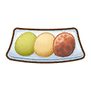
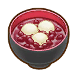

Matsuyuki


"¿Eres consciente de lo que pasará si juegas conmigo?".
Matsuyuki es el unico aldeano como personaje secreto que solamente se puede desbloquear si llegas a casarte con Iori en el juego. Este personaje llega a la Villa Oliva intentando atentar contra la vida de Iori. Tambien es conocido por maullar como un gato y permanece inmóvil junto a la casa de Iori, hablando la mayor parte del tiempo entre paréntesis.
| Cumpleaños | 3 de Primavera |
|---|---|
| Familia | Desconocido |
| Horario | Martes a Domingo | Matsuyuki empezará su dia en Seishin-an (casa de Iori y Dosetsu) desde las 6:00 hasta las 21:00, para luego desaparecer a partir de la 22:30. |
|---|---|---|
   |
Matsuyuki no estara disponible porque no se encontrara en la villa Oliva. |
Preferencias de regalo
La mejor forma de mejorar la amistad y el afecto es siempre regalar las cosas que le gusta una vez por dia.
|
😍
Fasina
|
 Arroz blanco cocido  Pescado a la plancha Onigiri |
|---|---|
|
🙂
Encanta
|
Lirio  Daifuku de artemisa  Reloj brillante |
|
😐
Gusta
|
 Pescado hervido 
Botamochi  Monaka de castañas  Arroz con castañas  Kitsune udon  Arroz con hongo pino  Arroz con setas 
Oshiruko Arroz  Salsa de soja  Daifuku de fresa |
| Nota: Todos los regalos que no estan aquí son considerados neutrales para el personaje. | |
Eventos del personaje
Cada evento que ocurra el jugador podra conecer mas sobre el personaje, algunos eventos son partes de la historia del juego y otras son eventos extras que puedes hacer.
Primera y única advertencia
| Ubicacion | Hora | Clima | Requisito | Extra |
|---|---|---|---|---|
| Exterior de la residencia de Iori: Seishin-an | 08:00 am - 05:59 pm |
  |
|
— |
Rumores extraños
| Ubicacion | Hora | Clima | Requisito | Extra |
|---|---|---|---|---|
| Plaza de la villa olivos | 08:00 am - 05:59 pm. |
|
|
— |
El alcalde que gritó "Ninja"
| Ubicacion | Hora | Clima | Requisito | Extra |
|---|---|---|---|---|
| Plaza de la villa olivos | 08:00 am - 05:59 pm. |
|
|
— |